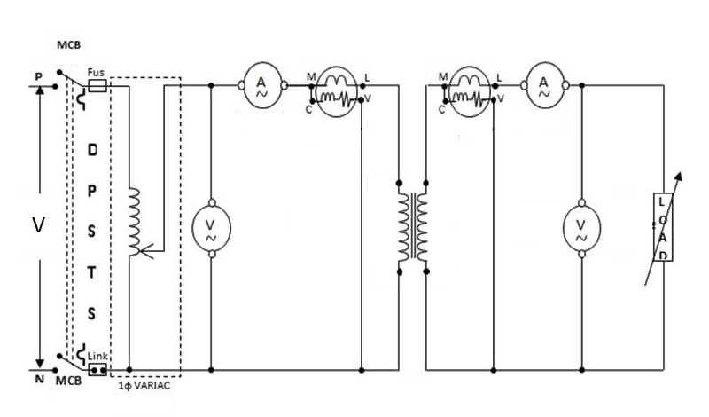

In this method, the efficiency and regulation of the transformer is calculated in various load conditions to obtain the performance characteristics.
The secondary of transformer is connected to load. When secondary is loaded, the secondary current I2 is set up.
The magnitude and phase of I2 with respect to terminal voltage V2 depends on the type of load (If load is resistive then I2 will be in phase with V2, for inductive load I2 will lag behind V2 and for capacitive load it will lead the voltage V2).
Because of this secondary current I2, there is a drop in terminal voltage V2 . Drop in voltage depends on the impedance of load & p.f. For leading p.f. voltage drop may be negative and for lagging p.f. it is always positive.
Since the flux passing through the core is same from no load to full load conditions, core losses remain same and since the copper losses depend on the square of the current, they vary with the current.
Regulation is defined as the ratio of change in terminal voltage from no load to full load to the no load voltage. Regulation can be found out at any p.f. and at any load current.
Efficiency is defined as the ratio of output power to the input power of the transformer. Efficiency of a transformer varies with power factor at different loads.
|  |
Circuit diagram for load test |